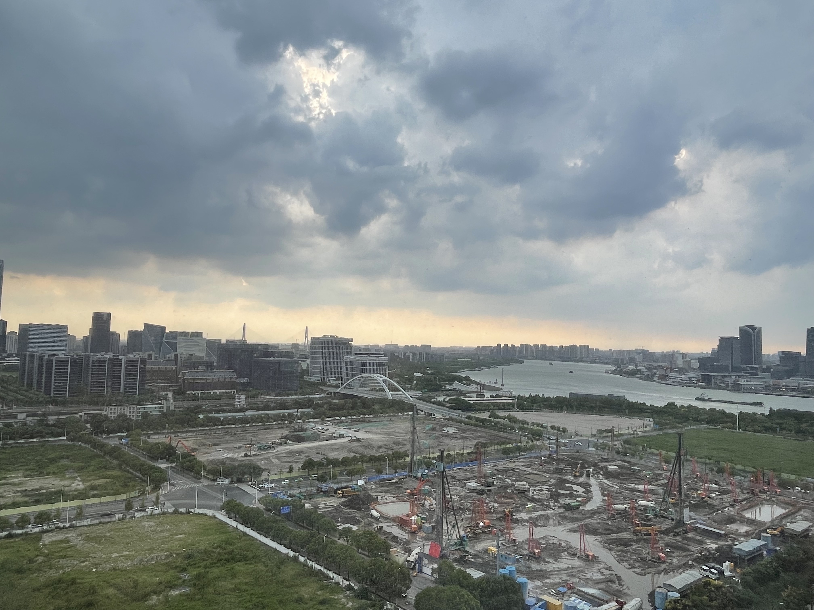

⊹˚₊‧────────────────────────‧₊˚⊹
I drop my bag.
My room exhales silence.
Except for the soft hum of boats drifting back and forth on the Huangpu River,
glowing in the sunset beyond my window.
✧･ﾟ: *✧･ﾟ:* ☀️ *:･ﾟ✧*:･ﾟ✧
The screen flickers.
▒▒▓▓▓▓▒▒▓▓▓▓▒▒▓▓▓▓▒▒▓▓▓▓▒▒
▓▓ L O A D I N G . . . ▓▓
▒▒▓▓▓▓▒▒▓▓▓▓▒▒▓▓▓▓▒▒▓▓▓▓▒▒
Albert
opens.
Time slips away, silent and unnoticed,
──────────────────────────────────────────────────────────────
. . . . . . . . . .
. . . . . . . . . . .
. . . . . . . . . .
. . . . . . . . . . .
──────────────────────────────────────────────────────────────
Moments pass by, quiet like a breeze.
──────────────────────────────────────────────────────────────
. . . . . . . . . .
. . . . . . . . . . .
. . . . . . . . . .
. . . . . . . . . . .
──────────────────────────────────────────────────────────────
No sound, no hurry, just for my thoughts.
──────────────────────────────────────────────────────────────
. . . . . . . . . .
. . . . . . . . . . .
. . . . . . . . . .
. . . . . . . . . . .
Maybe I should consider swapping one of my courses.
Do I wake up at 8 a.m. three days a week?
Or gamble on a writing seminar I can't manage?
Or hide inside a course I've already taken in my head?
（╯°□°）╯︵ ┻━┻
Oh? Communications lab? Web design? This class looks interesting!

Maybe I should consider swapping to this class!
Suddenly———